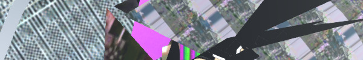

👹 ARTSTUFF.WTF

FRI 10/13

Beyond the Bars LA: The End of Mass Incarceration UCLA
3:30pm - 10pm (also events Saturday through Sunday)
FREE
Beyond the Bars LA fellows and the Justice Work Group at UCLA will host Beyond the Bars LA: The End of Mass Incarceration, our inaugural conference, to bring together community organizations, activists, policy makers, researchers, students and those directly impacted by issues of incarceration from across the nation.This conference seeks to join the efforts of various individuals and groups working to end mass incarceration, in order to bring together our knowledge, experience, and expertise. Our goal is not only for us to educate and engage one another, but to form lasting working relationships and inspire each other into action and create genuine social change. This year’s conference theme is The End of Mass Incarceration, which will focus on discourse and organization that orients us toward the reality of a future without mass incarceration
LINK
SAT 10/14
Crate Diggers Los Angeles Free Record Fair and After Party
LOT 613
12pm - 6pm / afterparty 10pm - 4am
FREE
Discogs Presents Crate Diggers LA: {Free} Record Fair & After Party. Over 30+ Record Vendors. DJs: Cachet (The Infusion Project) Masha (Dig Deeper LA/ NTS Radio) Jen Ferrer (dublab / Far Away) Jeremy Sole (Worldwide FM) Kristi Lomax (KPFK) Scott K. (boxmusic | WOTN).
LINK
Duty of Care Opening Reception
Collective Arts Incubator
6pm - 8pm
FREE
The Collective Arts Incubator is proud to present Duty of Care, a group exhibition in various media by an international trio of artists; Max King Cap (USA), Edgar Endress (Chile), and Nuttaphol Ma (Thailand). Examining our social and political obligations to our fellow citizens—and the manifold ways in which we shirk this duty—the artists in Duty of Care document, enact, and embody our responsibilities and failings.
LINK
Opening Reception: Below The Underground: Renegade Art and Action in 1990s Mexico
Armory Center For The Arts
7pm - 9pm
FREE
This exhibition examines diverse independent artist initiatives – including ad hoc street performances and interventions, clubs, collaboratively produced ‘zines, archives and collections, pirate radio programs, and more. The project also references pronounced divisions of class, race, and gender, with art objects themselves the tangible outcomes of many different conditions of creating, living, and experimenting within the same place. A related publication complements the exhibition with content such as interviews, texts, and images generated through the deep research process, which has unfolded over the past four years. Please join us for the opening reception featuring a special DJ performance by Sonido Apokalitzin.
LINK

SUN 10/15
Intro to Super 8 Filmmaking and Hand Processing
Echo Park Film Center
1pm - 6pm
$75 / $60 members
Using the classic home-movie camera, participants will explore the history, application and tender sophistication of small format filmmaking. This one-day workshop includes basic camera operation, shooting techniques and hand-processing. No previous filmmaking experience necessary. All equipment and materials provided by EPFC. Class limited to 9 participants.
LINK
Ryoji Ikeda's A [for 100 cars] - RBMA L.A.
Downtown LA
4pm - 7pm (doors: 3pm)
FREE with RSVP
The renowned audiovisual artist presents the world’s largest synth orchestra. As part of Red Bull Music Academy Festival Los Angeles, renowned artist Ryoji Ikeda will present a brand-new composition, in collaboration with 100 automobile owners, that constitutes the world’s largest synth orchestra. The piece, entitled A [for 100 cars] will continue Ikeda’s long-running series investigating the frequencies of note A. Before the world settled on the general tuning standard of A=440Hz, there were historically many different standards. A [for 100 cars], performed by emitting sine waves at all these diverse (yet specific) frequencies, will create an immersive soundscape. RBMA’s Tatsuya Takahashi will work with Ikeda to create a device, especially for this performance, that will help guide the composition from start to finish.
LINK
Screen Novelties presents "Spook-A-Nanny" 2017
Bob Baker Marionette Theater
5pm (also Oct 19, 8pm)
I am quoting the description verbatim: Stop-motion animation powerhouse Screen Novelties presents their monster mash-up of retro cartoons and Halloween clips dragged from the depths of dusty VHS, DVD, and 16mm collections! Featuring the spooky hijinks of the Bob Baker Marionettes!
LINK

ABOUT
ARTSTUFF.WTF is a minimal website listing page for selected mostly DIY art (and etc) events going on around Los Angeles. It is a personal list of 5 - 10 events sent out to friends weekly, and made available online here for bookmarking and quick reference. There is an archive of past listings. Sign up to receive weekly emails. Made by Lee Tusman.
